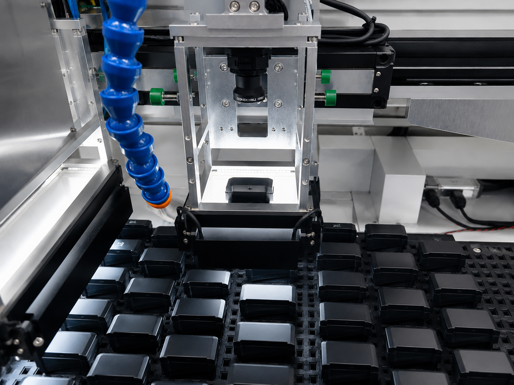
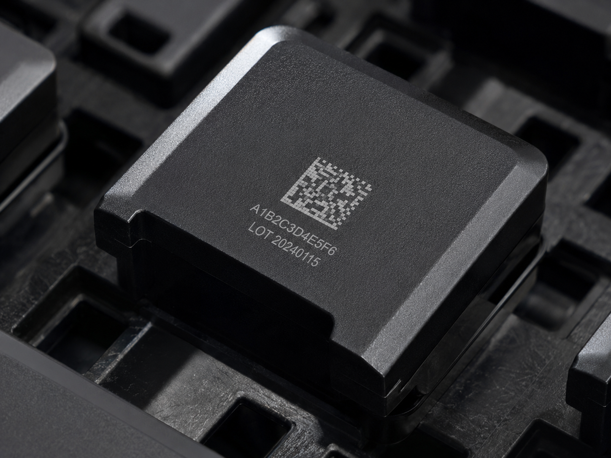
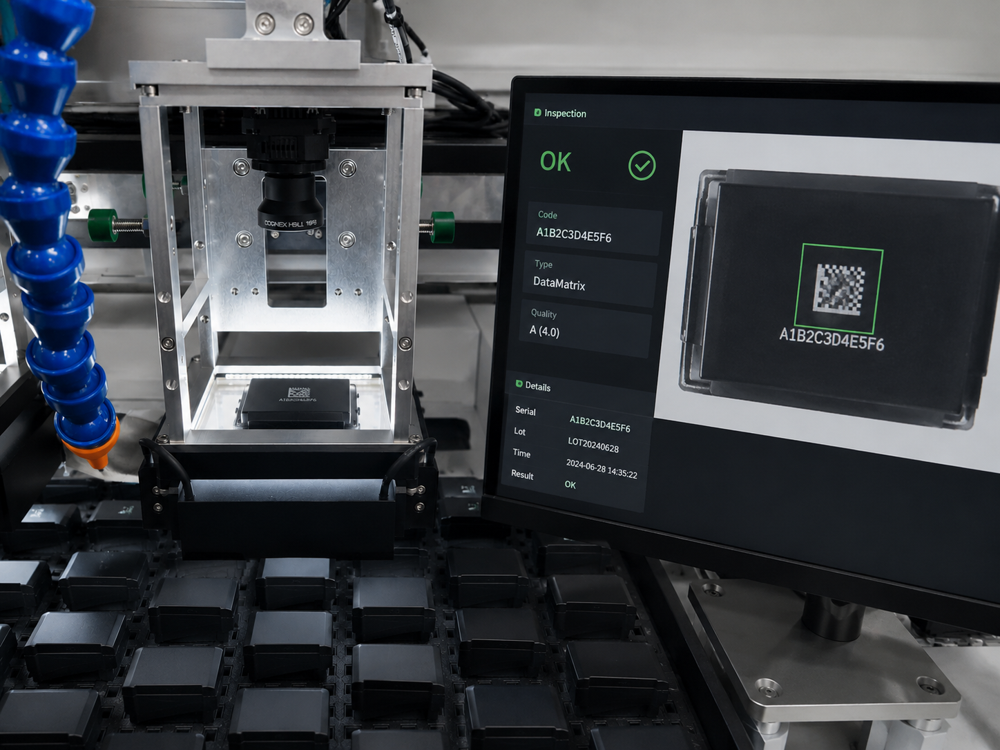

Laser Marking Case
비전 위치 보정 및
마킹 후 검사 사례
생산라인에서는 제품이 항상 같은 위치에 놓이지 않습니다. 쿠키혼레이저는 카메라로 제품 위치와 방향을 확인하고, 마킹 좌표를 보정한 뒤 마킹 결과를 다시 검사하는 공정 구성을 적용합니다.
Case Summary
사례 정보 입력표
제품 소재, 요구 품질, 생산 조건에 따라 레이저 조건과 검사 방식을 검토합니다.
| 적용 산업 | 자동차·전자·기계 부품 자동화 공정 |
|---|---|
| 소재 | 금속 부품, 플라스틱 부품, 조립품 등 |
| 레이저 종류 | 파이버·UV·CO2 레이저 중 공정에 맞게 선정 |
| 레이저 출력 | 제품 소재 및 마킹 내용에 따라 선정 |
| 렌즈 및 마킹 영역 | 마킹 영역, 카메라 시야, 제품 투입 위치 기준으로 선정 / 실제 조건 입력 |
| 마킹 내용 | 로고, 문자, QR 코드, Data Matrix, 시리얼 번호 |
| 기존 문제 | 제품 위치 편차, 회전 편차, 지그 공차, 투입 방향 차이 때문에 마킹 위치가 틀어지거나 검사 누락이 발생할 수 있습니다. |
| 쿠키혼레이저 해결 방법 | 비전 기준점을 인식해 X/Y/각도 보정값을 계산하고, 보정된 좌표로 마킹한 뒤 판독·위치·누락 여부를 검사합니다. |
| 마킹 시간 | 비전 촬영 시간, 마킹 시간, 검사 시간 제품 소재와 요구 품질 기준에 따라 테스트 후 산정합니다. |
| 검사 방식 | 카메라 검사, 코드 리더기, OCR/OCV, OK/NG 신호, PLC 연동 |
| 최종 결과 | 샘플 테스트 후 보정 전후 위치 편차, 판독률, NG 판정 기준을 확인합니다. |
| 한계 또는 주의사항 | 비전 보정 정확도는 조명, 카메라 해상도, 렌즈 왜곡, 기준 마크 품질, 제품 표면 상태의 영향을 받습니다. |
| 실제 사진 | 샘플 테스트 시 마킹 전후 상태와 검사 결과를 확인합니다. |
Photo & Measurement
실제 사진 및 측정 데이터 영역
마킹 전 소재 상태
비전 카메라와 조명 조건에서 마킹 전 제품 위치와 투입 상태를 확인합니다.

마킹 후 확대 상태
마킹 완료 후 Data Matrix와 문자 정보가 제품 표면에 선명하게 형성된 상태를 확인합니다.

검사 및 판독 결과
비전 검사 화면에서 코드 판독 결과와 OK 판정을 함께 확인하는 예시입니다.

Process
문제 해결 과정
평가 포인트
실제 소재, 조건, 마킹 전후 사진, 검사 결과, 한계까지 함께 기록해야 고객과 검색엔진이 기술 경험을 확인할 수 있습니다.
검토 방식
제품 도면과 샘플을 기준으로 레이저 종류, 출력, 렌즈, 지그, 비전 검사, 통신 연동까지 공정 단위로 검토합니다.
검토 자료
확대 사진, 조건표, 마킹 시간, 판독 결과, 검사 화면, NG 원인 분석 자료를 기준으로 양산 적용 가능성을 검토합니다.
Test Request
샘플 테스트 상담
제품 사진, 소재명, 마킹 크기, 생산 수량, 원하는 코드 또는 문자를 보내주시면 적합한 레이저 종류와 검사·자동화 구성을 검토해 드립니다.